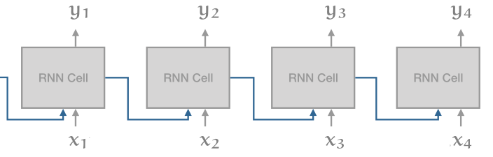
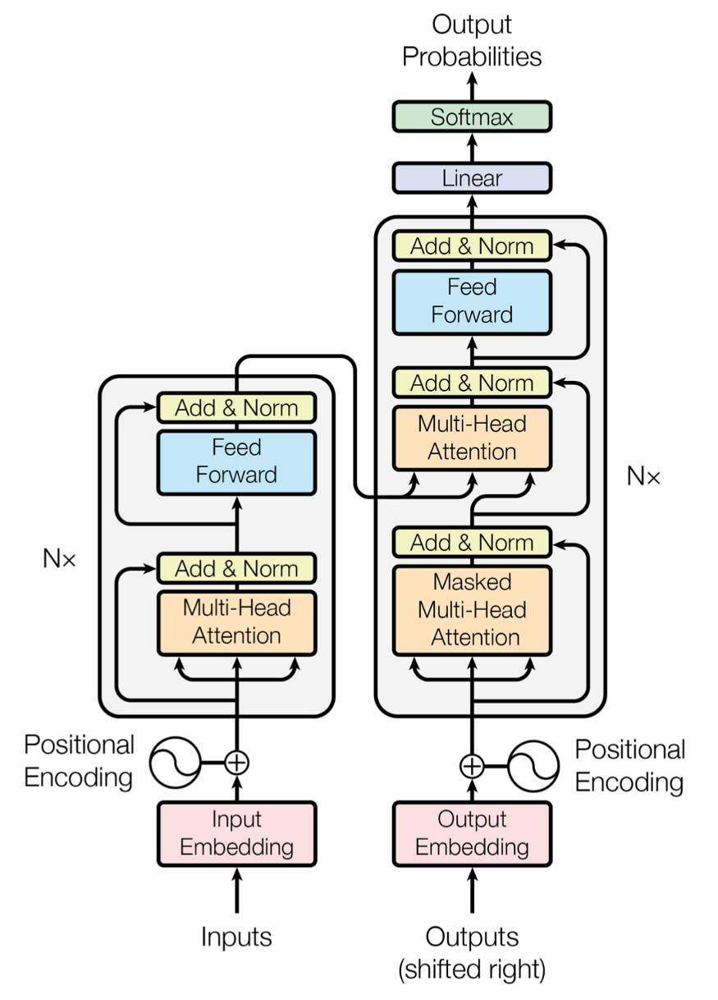

Transformer
An overview of architecture
Bartosz Wójtowicz
Prerequisites
You know how Neural Networks work
Basic knowledge of PyTorch
(optional) Basic understanding of attention mechanism
Presentation outline
The problem with RNNs (recap)
Quick look at Vanilla Transformer - Attention is All You Need paper
Building blocks of the vanilla transformer
Encoder-only architectures
The problem with RNNs (recap)

RNN problems
Not parralizable within a sequence - RNNs process tokens sequentially
Problems with (very) long dependencies
Vanishing/exploding gradients - biased by recent input
Computationally expensive to train
Vanilla Transformer

We'll break it down into:
Self-Attention
Multi-Head Attention
Position encodings and embeddings
Encoder Block
Decoder Block